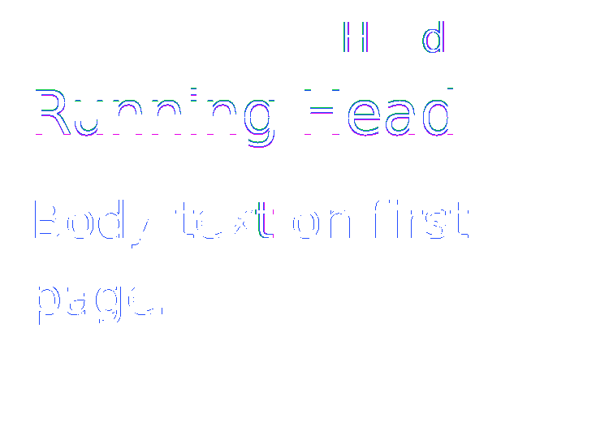
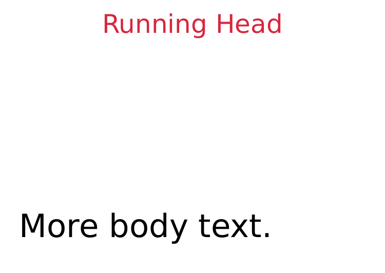
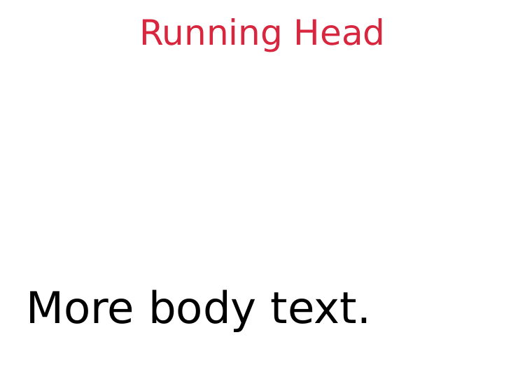
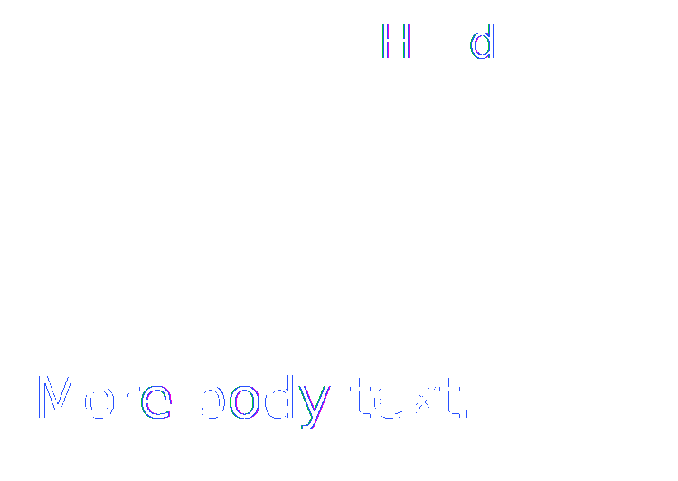

REFERENCE-DISPUTED 5873 px · above-floor 1.20% · raw 1.47% max-page diff generated-content-string-set-running-header · string-set-running-header · oracle: weasyprint · REFERENCE DISPUTED · 2 pagesMissingmissing 3.0%extra 3.0%ΔE 13.8
page 1

page 2



why: candidate lacks paint present in reference (3.0%)
A heading stores its text in a named running string and the page top-center margin prints string(chapter). The explicit top margin gives that box a visible, nonzero layout area; the heading weight is explicit so this isolates named-string collection from engine-specific HTML UA styles. Catches: @page literal/counter support passes simple page footer tests but cannot collect named strings from document content.
reference dispute: CSS GCPM requires string-set to capture the heading and string() to reproduce it in the page-margin box; it does not prescribe renderer-specific glyph quantization. Both PDFs contain the complete Running Head on both pages. On page 1 Ironpress places its header bbox at x=47.8125..132.1758pt, y=4.2683..18.2243pt, versus WeasyPrint x=47.8184..132.2024pt, y=4.2683..18.2363pt. The residual is a text-contour representation difference, so this WeasyPrint PDF is not a unique pixel oracle; raw shared-pdftoppm evidence remains reported.
regions (1327 total; showing 64 representatives)
Complete dominant-class aggregates
| class | regions | pixels | union bbox (CSS px) | largest px | maximum magnitude |
|---|---|---|---|---|---|
| Extra | 266 | 760 | 1,0 → 165,85 | 37 | total 0.4% · largest 0.02% |
| ColorErr | 814 | 4353 | 0,0 → 171,119 | 50 | total 2.2% · largest 0.02% |
| Missing | 247 | 760 | 1,0 → 165,85 | 38 | total 0.4% · largest 0.02% |
Representative region details (worst-first)
| class | bbox (CSS px) | area% | magnitude | reason |
|---|---|---|---|---|
| AntialiasCoverage | 25,76 → 31,85 | 0.02 | ΔRGB(4,4,4) | antialiasing coverage residue on a shared outline |
| AntialiasCoverage | 35,70 → 35,85 | 0.02 | ΔRGB(3,3,3) | antialiasing coverage residue on a shared outline |
| AntialiasCoverage | 0,71 → 0,85 | 0.02 | ΔRGB(-4,-4,-4) | antialiasing coverage residue on a shared outline |
| AntialiasCoverage | 20,75 → 23,84 | 0.02 | ΔRGB(-3,-3,-3) | antialiasing coverage residue on a shared outline |
| AntialiasCoverage | 109,75 → 112,84 | 0.02 | ΔRGB(-3,-3,-3) | antialiasing coverage residue on a shared outline |
| AntialiasCoverage | 34,104 → 34,117 | 0.02 | ΔRGB(3,3,3) | antialiasing coverage residue on a shared outline |
| AntialiasCoverage | 3,106 → 8,112 | 0.02 | ΔRGB(3,3,3) | antialiasing coverage residue on a shared outline |
| Missing | 161,0 → 161,12 | 0.02 | candidate lacks paint present in reference (0.02%) | |
| AntialiasCoverage | 161,0 → 161,12 | 0.02 | ΔRGB(32,173,154) | antialiasing coverage residue on a shared outline |
| Missing | 131,0 → 131,12 | 0.02 | candidate lacks paint present in reference (0.02%) | |
| Extra | 122,0 → 122,12 | 0.02 | candidate adds paint absent from reference (0.02%) | |
| AntialiasCoverage | 122,0 → 122,12 | 0.02 | ΔRGB(-36,-197,-176) | antialiasing coverage residue on a shared outline |
| AntialiasCoverage | 131,0 → 131,12 | 0.02 | ΔRGB(12,67,60) | antialiasing coverage residue on a shared outline |
| AntialiasCoverage | 126,35 → 134,37 | 0.02 | ΔRGB(-213,-213,-213) | antialiasing coverage residue on a shared outline |
| AntialiasCoverage | 126,38 → 136,40 | 0.02 | ΔRGB(227,227,227) | antialiasing coverage residue on a shared outline |
| AntialiasCoverage | 155,0 → 160,4 | 0.02 | ΔRGB(-9,-48,-43) | antialiasing coverage residue on a shared outline |
| AntialiasCoverage | 143,75 → 143,85 | 0.02 | ΔRGB(4,4,4) | antialiasing coverage residue on a shared outline |
| AntialiasCoverage | 29,76 → 33,81 | 0.02 | ΔRGB(3,3,3) | antialiasing coverage residue on a shared outline |
| Missing | 126,39 → 136,39 | 0.01 | candidate lacks paint present in reference (0.01%) | |
| AntialiasCoverage | 109,34 → 117,34 | 0.01 | ΔRGB(-187,-187,-187) | antialiasing coverage residue on a shared outline |
| AntialiasCoverage | 109,36 → 117,36 | 0.01 | ΔRGB(7,7,7) | antialiasing coverage residue on a shared outline |
| AntialiasCoverage | 134,76 → 134,85 | 0.01 | ΔRGB(-4,-4,-4) | antialiasing coverage residue on a shared outline |
| AntialiasCoverage | 124,76 → 124,85 | 0.01 | ΔRGB(-4,-4,-4) | antialiasing coverage residue on a shared outline |
| AntialiasCoverage | 148,77 → 149,85 | 0.01 | ΔRGB(-4,-4,-4) | antialiasing coverage residue on a shared outline |
| AntialiasCoverage | 24,107 → 26,114 | 0.01 | ΔRGB(4,4,4) | antialiasing coverage residue on a shared outline |
| Missing | 109,36 → 117,36 | 0.01 | candidate lacks paint present in reference (0.01%) | |
| Extra | 109,34 → 117,34 | 0.01 | candidate adds paint absent from reference (0.01%) | |
| AntialiasCoverage | 3,34 → 9,35 | 0.01 | ΔRGB(-185,-185,-185) | antialiasing coverage residue on a shared outline |
| Extra | 1,27 → 8,27 | 0.01 | candidate adds paint absent from reference (0.01%) | |
| AntialiasCoverage | 1,27 → 8,27 | 0.01 | ΔRGB(-83,-83,-83) | antialiasing coverage residue on a shared outline |
| AntialiasCoverage | 142,35 → 148,36 | 0.01 | ΔRGB(-27,-27,-27) | antialiasing coverage residue on a shared outline |
| AntialiasCoverage | 90,76 → 91,83 | 0.01 | ΔRGB(139,139,139) | antialiasing coverage residue on a shared outline |
| AntialiasCoverage | 117,78 → 117,85 | 0.01 | ΔRGB(-4,-4,-4) | antialiasing coverage residue on a shared outline |
| Extra | 126,36 → 133,36 | 0.01 | candidate adds paint absent from reference (0.01%) | |
| AntialiasCoverage | 59,76 → 59,83 | 0.01 | ΔRGB(-4,-4,-4) | antialiasing coverage residue on a shared outline |
| AntialiasCoverage | 88,76 → 89,83 | 0.01 | ΔRGB(-203,-203,-203) | antialiasing coverage residue on a shared outline |
| AntialiasCoverage | 167,76 → 167,83 | 0.01 | ΔRGB(-4,-4,-4) | antialiasing coverage residue on a shared outline |
| Missing | 91,76 → 91,83 | 0.01 | candidate lacks paint present in reference (0.01%) | |
| AntialiasCoverage | 124,36 → 125,42 | 0.01 | ΔRGB(15,15,15) | antialiasing coverage residue on a shared outline |
| AntialiasCoverage | 11,39 → 13,43 | 0.01 | ΔRGB(-83,-83,-83) | antialiasing coverage residue on a shared outline |
| AntialiasCoverage | 156,84 → 162,85 | 0.01 | ΔRGB(4,4,4) | antialiasing coverage residue on a shared outline |
| Extra | 88,76 → 88,83 | 0.01 | candidate adds paint absent from reference (0.01%) | |
| AntialiasCoverage | 143,38 → 148,40 | 0.01 | ΔRGB(119,119,119) | antialiasing coverage residue on a shared outline |
| AntialiasCoverage | 127,31 → 133,32 | 0.009996 | ΔRGB(-73,-73,-73) | antialiasing coverage residue on a shared outline |
| AntialiasCoverage | 33,70 → 33,76 | 0.009996 | ΔRGB(4,4,4) | antialiasing coverage residue on a shared outline |
| AntialiasCoverage | 117,76 → 122,77 | 0.009996 | ΔRGB(-2,-2,-2) | antialiasing coverage residue on a shared outline |
| AntialiasCoverage | 13,77 → 13,83 | 0.009996 | ΔRGB(3,3,3) | antialiasing coverage residue on a shared outline |
| AntialiasCoverage | 102,77 → 102,83 | 0.009996 | ΔRGB(3,3,3) | antialiasing coverage residue on a shared outline |
| AntialiasCoverage | 159,5 → 160,10 | 0.009496 | ΔRGB(-23,-123,-110) | antialiasing coverage residue on a shared outline |
| AntialiasCoverage | 124,6 → 124,12 | 0.009496 | ΔRGB(6,33,30) | antialiasing coverage residue on a shared outline |
| AntialiasCoverage | 129,6 → 130,12 | 0.009496 | ΔRGB(-31,-166,-148) | antialiasing coverage residue on a shared outline |
| AntialiasCoverage | 8,29 → 9,34 | 0.008996 | ΔRGB(13,13,13) | antialiasing coverage residue on a shared outline |
| AntialiasCoverage | 142,31 → 147,32 | 0.008996 | ΔRGB(-68,-68,-68) | antialiasing coverage residue on a shared outline |
| AntialiasCoverage | 156,36 → 156,40 | 0.008996 | ΔRGB(11,11,11) | antialiasing coverage residue on a shared outline |
| AntialiasCoverage | 66,85 → 71,85 | 0.008996 | ΔRGB(4,4,4) | antialiasing coverage residue on a shared outline |
| AntialiasCoverage | 16,85 → 20,85 | 0.008996 | ΔRGB(3,3,3) | antialiasing coverage residue on a shared outline |
| AntialiasCoverage | 105,85 → 109,85 | 0.008996 | ΔRGB(3,3,3) | antialiasing coverage residue on a shared outline |
| AntialiasCoverage | 2,108 → 3,113 | 0.008996 | ΔRGB(-4,-4,-4) | antialiasing coverage residue on a shared outline |
| AntialiasCoverage | 2,114 → 2,119 | 0.008996 | ΔRGB(-4,-4,-4) | antialiasing coverage residue on a shared outline |
| AntialiasCoverage | 39,115 → 44,116 | 0.008996 | ΔRGB(4,4,4) | antialiasing coverage residue on a shared outline |
| Missing | 124,7 → 124,12 | 0.008496 | candidate lacks paint present in reference (0.008496%) | |
| Extra | 129,7 → 129,12 | 0.008496 | candidate adds paint absent from reference (0.008496%) | |
| Extra | 142,36 → 147,36 | 0.008496 | candidate adds paint absent from reference (0.008496%) | |
| AntialiasCoverage | 124,0 → 124,5 | 0.008496 | ΔRGB(6,33,30) | antialiasing coverage residue on a shared outline |
source · cases/generated-content/generated-content-string-set-running-header.html
1<!DOCTYPE html><html><head><meta charset='utf-8'><style>@page{size:240px 170px;margin:30px 0 0}html{font-family:ParitySans;line-height:1.5}*{margin:0;box-sizing:border-box}@page{@top-center{content:string(chapter);color:#d7263d}}body{padding:0 12px 12px;background:#fff;font-size:20px;line-height:30px}h1{string-set:chapter content();font-size:24px;font-weight:normal;margin-bottom:12px}.spacer{height:96px}</style></head><body><h1>Running Head</h1><p>Body text on first page.</p><div class='spacer'></div><p>More body text.</p></body></html>